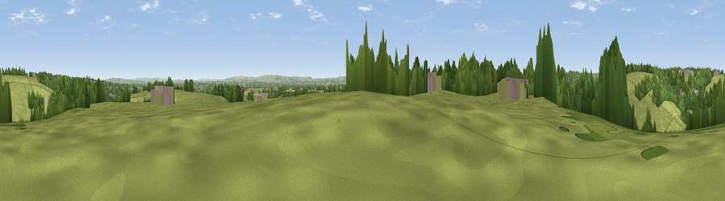

Viewpoint near Westwood
#25755 in England · top 45% of its area beats it · near WestwoodWhere it is
The exact computed spot (ST 80925 59825). Click the marker for map links.
The view, rendered

A 360° render of this exact spot computed from the terrain model, tree cover and land cover — summer colours, afternoon light, calibrated against photographs of famous viewpoints. Real trees, hedges and buildings will differ in detail.
The panorama
Grey silhouette: terrain skyline in each direction (720 bearings, Earth curvature and refraction included). Dashed green: skyline with trees (+15 m) and buildings (+8 m) as obstacles. Blue strip: how far the ground is visible on each bearing.
Where the view opens
Wedge length = distance to the farthest visible ground on that bearing (vegetation-aware). Rings at 10, 25 and 50 km.
What fills the view
59% grassland · 31% woodland · 6% cropland · 5% built-up
Angular shares of the visible panorama (visual magnitude), not map area. Landscape diversity 0.43 (0–1 Shannon).
Key numbers
More beautiful places nearby
The staircase of upgrades: each row has a higher view potential than everything closer. Driving times are estimates from straight-line distance, calibrated against real road routing — check an actual route before setting out.
| Place | Direction | Drive | Score |
|---|---|---|---|
| Viewpoint near Winsley | NW · 1 km | ~3 min | 46.3 |
| Viewpoint near Limpley Stoke | W · 4 km | ~9 min | 60.8 |
| Viewpoint near Bathford | NNW · 7 km | ~14 min | 62.4 |
| Viewpoint near Combe Hay | W · 9 km | ~17 min | 66.1 |
| Viewpoint near Inglesbatch | W · 10 km | ~19 min | 68.8 |
| Viewpoint near Westbury | SE · 12 km | ~22 min | 71.3 |
| Viewpoint near Bratton | SE · 12 km | ~23 min | 73.2 |
| Viewpoint near Kelston | NW · 12 km | ~23 min | 74.2 |
51.33719, -2.27521 · source: screening · position refined by local search. Computed location — check access rights before visiting.